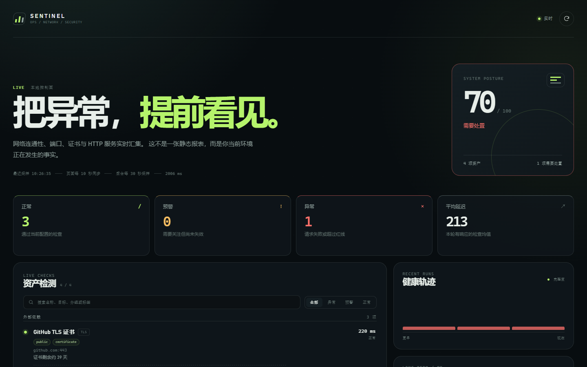
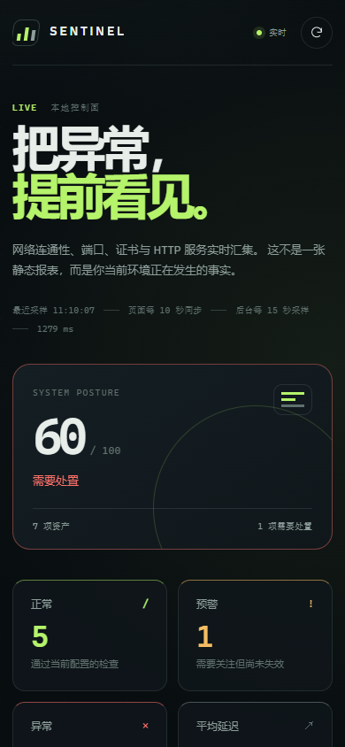
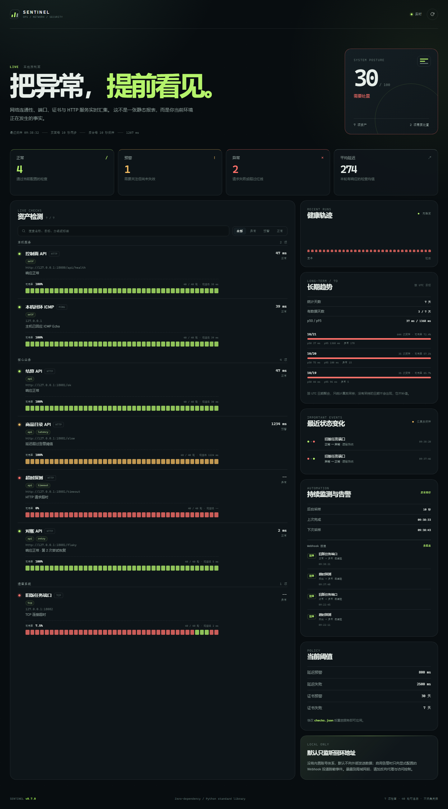
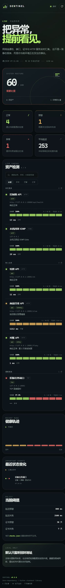

四类真实检测
ICMP 连通性、TCP 端口握手、TLS 证书剩余天数、HTTP 状态码与延迟，各自独立超时。
LOCAL-FIRST OBSERVABILITY · v0.12.0
ICMP、TCP、TLS 与 HTTP 在后台持续采样，汇入同一条实时时间线。 每项资产拥有 heartbeat、可用率、真实状态变化与 Webhook 投递证据，没有伪造成功率。


01 / CAPABILITIES
借鉴 Uptime Kuma 的后台监测、heartbeat、状态迁移与通知逻辑，同时保留 Sentinel 的零依赖、本地优先和证据边界。
ICMP 连通性、TCP 端口握手、TLS 证书剩余天数、HTTP 状态码与延迟，各自独立超时。
每个检查可选 0–2 次额外尝试。最终结果会写明第几次尝试、是否重试恢复，持续失败仍然显示失败。
业务分组、标签、名称 / 目标搜索与状态筛选共同工作，先看最该处置的那一项。
一键下载自包含 HTML，明确标注已测量、已跳过与未测量边界；URL 中的凭据、查询参数与片段会被移除。
每项保存最近 40 轮精简状态与延迟，展示可用率；只有相邻真实采样变化时才记录 Important Event。
默认只监听 127.0.0.1，CSP、nosniff、禁止 iframe；不采集凭据。
页面关闭也不会停。后台按 10–3600 秒周期采样，服务端保留最新快照与逐项 heartbeat。
故障、降级与恢复触发 JSON Webhook；按迁移去重、冷却、有限重试，可选 HMAC-SHA256 签名。
按真实 UTC 日聚合可用率与 p50 / p95；只统计有采样的日期，缺失日期不会被补造。
从真实 TLS 握手返回的到期时间计算剩余天数，按阈值分级；握手失败或缺少证书指标的检查不出现，也不推测。
单文件 4 MiB、2 份归档、最多加载 5000 行；超额自动轮转，截断状态在 API 和页面如实标注。
发布或迁移期间继续真实采样，只抑制被覆盖检查的 Webhook，并把窗口名称写进告警账本，避免告警风暴。
02 / INTERFACE
总体姿态、四项计数、每项 heartbeat、可用率、搜索、筛选与最近事件，都在同一页完成阅读。


03 / LOCAL DEMO
Demo 不访问公网：本地 HTTP 替身提供成功、延迟、重试恢复、故障端口与 Webhook 接收器，所有状态都由真实检测产生。
python examples\demo_targets.py --port 18081
python server.py --port 18080 --config examples\checks.demo.json --data-dir data\demo
04 / EVIDENCE BOUNDARY
而不是看起来好看。
每一项结果都保留原始证据：延迟、状态码、证书到期时间、错误原因与尝试次数。 “失败”就是失败，不会因为重试成功而抹掉曾经发生过的事实。可用率是“最近窗口内非 fail 样本占比”， 明确区别于 SLA 或时间加权统计。
05 / INSTALL
第一次使用推荐直接下载便携包；服务器环境使用 Docker；需要审计或二次开发时从源码运行。 所有方式都不需要数据库，不依赖第三方 Python 包。
下载 ZIP，解压，确认 Python 3.11+，双击 start-sentinel.cmd。
只映射到 127.0.0.1:8080，历史与告警账本写入 Docker volume。
docker compose up --build -d
适合审计、开发与自定义配置。复制仓库后直接启动 Python 标准库服务。
python server.py
monitor_interval_seconds；生产环境优先用 *_env 注入 Webhook 秘密。maintenance_windows 中声明发布时段与覆盖检查；窗口内继续采样，只抑制告警。# 1. 下载并解压便携包后 cd sentinel-0.12.0 .\start-sentinel.cmd # 2. 或直接从源码启动 python server.py # 3. 打开看板与下载本轮报告 http://127.0.0.1:8080 http://127.0.0.1:8080/api/report # 4. 验证后台调度与告警账本 curl http://127.0.0.1:8080/api/health curl http://127.0.0.1:8080/api/alerts # 5. 读取按天趋势与证书到期日历 curl http://127.0.0.1:8080/api/trends?days=7 curl http://127.0.0.1:8080/api/certificates # 6. 检查历史留存上限与真实占用 curl http://127.0.0.1:8080/api/health # 7. 读取维护窗口与告警抑制状态 curl http://127.0.0.1:8080/api/maintenance # 8. 仅调试页面，不启动后台采样 python server.py --no-scheduler --version
06 / ARCHITECTURE
标准库做到足够小，也足够容易审计。
声明式配置：目标、类型、超时、阈值、分组、标签与受限重试；最多 200 项，启动时严格校验并拒绝带凭据的 URL。
后台线程定时采样，线程池并发执行；每个检查独立超时，失败后受限重试，并把每轮精简状态写入有界历史。
实时页面、只读 API、Webhook 账本与自包含 HTML 共享同一份快照；heartbeat、事件和恢复只来自真实采样。
当前只有四类黑盒探测与延迟阈值，要覆盖更多资产类型，需要先补**域 / 探测 / 断言**三层内核。 缺口证据（G1–G12）与每层可行性见 架构与开发方向， 版本排期见 ROADMAP。
07 / ROADMAP
在同一套证据模型下覆盖七类资产。下面标注“规划中”的项目尚未实现—— 本页只承诺已经能跑的部分，路线不写成能力清单。
ICMP / TCP / TLS / HTTP 四类黑盒探测，独立超时、受限重试、状态迁移告警、长期趋势与证书日历。
DNS（标准库自写报文解析 A / AAAA / CNAME）与 UDP 探测；现有四类接入断言层。不做端口扫描与流量分析。
TLS 协议与套件姿态、HTTP 安全响应头核查、授权端口清单漂移比对。防御性核查，无漏洞库、无 PoC、无爆破。
CPU / 内存 / 磁盘 / 负载。Linux 读 /proc，Windows 经 ctypes 调系统 API，磁盘跨平台。不做 Agent 分发。
Redis（RESP）、MySQL、PostgreSQL 的只读健康查询与指标断言。凭据走引用层，不执行任意 SQL、不读业务数据。
Elasticsearch / Nacos / Consul（HTTP 健康端点）先行，Kafka 与 AMQP 做握手级检测。不消费消息、不做管理写操作。
kubelet 与 API Server 只读采集：NotReady 节点数、Pod 重启增量、资源用量断言。不做 exec / logs 流与任何写操作。
MQTT（含保留消息与遗嘱检测）、Modbus TCP 只读功能码、CoAP。不下发指令、不做固件 OTA、不控制设备。
v0.11–v0.17 内核：单实例锁、/healthz /readyz /metrics、探测注册表与 domain 维度、声明式断言层、secret_ref 凭据作用域、scope 授权范围、SQLite 后端、只读分享令牌与告警 Provider 矩阵。不新增任何监控域，只做“让多域成为可能”的事。
v0.20–v0.26 逐域落地，每域一个版本、只交付有界的首个切片，排序依据是复用度 → 刚需程度 → 前置依赖。
v0.30+ 综合化，按需启动：多实例只读聚合、依赖与拓扑视图、SLO 与错误预算。不做中心写控与数据回传。
有界原则不因扩展而让步：单实例仍限 200 项检查、采样间隔下限 10 s。 需要更大规模说明要多实例分工，而不是放宽上限。